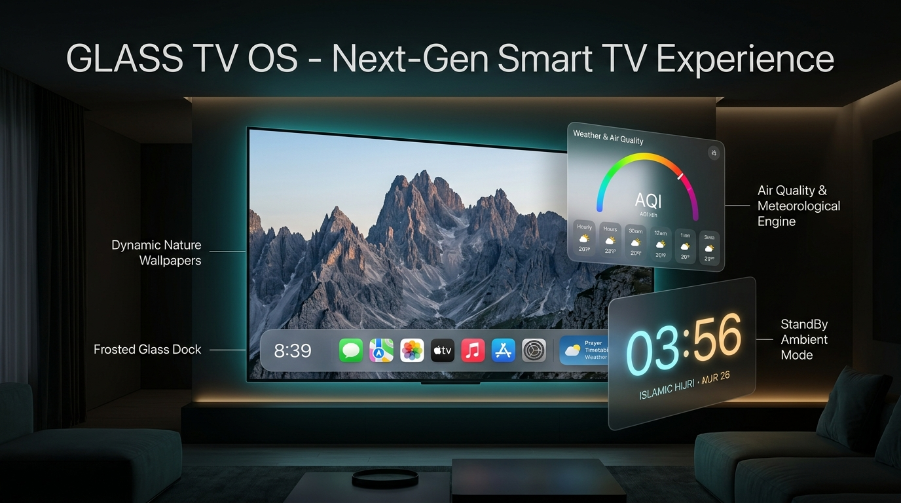
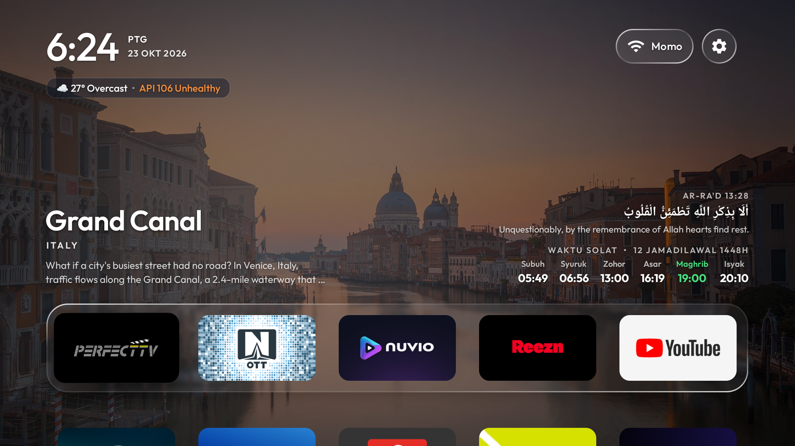
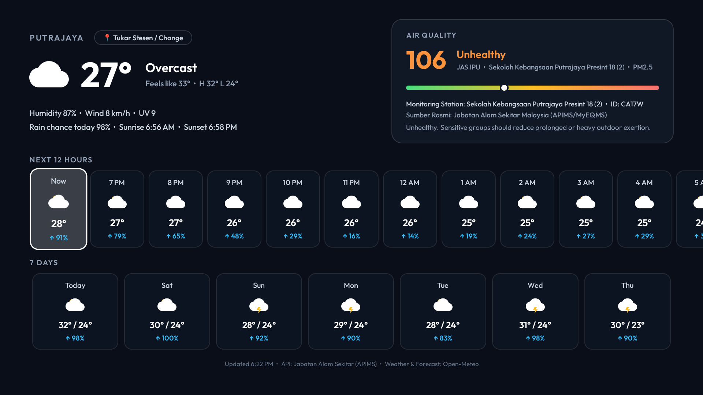
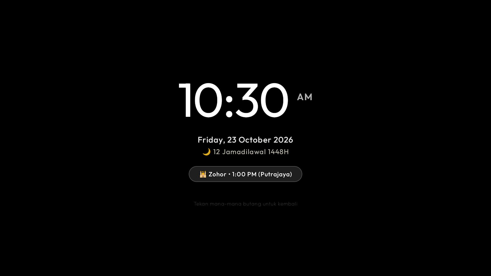

A mindful living room OS combining Apple tvOS frosted glass dock aesthetics, dynamic geographic nature narratives, real-time atmospheric intelligence, and Islamic prayer rhythms.


Ultra-bold 1:2 layout pairing high-contrast digital hours with stacked period indicators (PG/PTG/MLM) and localized Gregorian date.
Directly beneath the clock. One-click D-Pad access displaying live temperature, weather icon, and official APIMS Air Pollutant Index.
Surah reference, Arabic Ayat of the Day, and a 6-phase prayer table with emerald highlighting for the active prayer window.
tvOS inspired translucent frosted tray. Focus states elevate tiles with smooth scaling, white glowing perimeter, and audio cues.


GLOBAL_ACTION_LOCK_SCREEN).